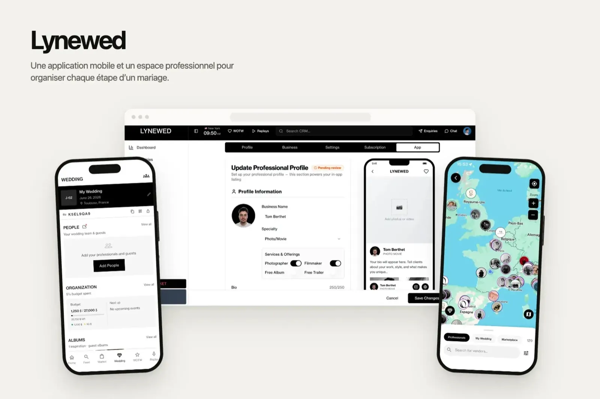
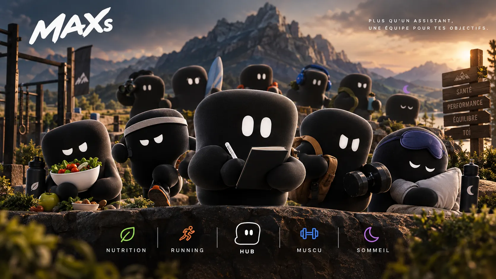
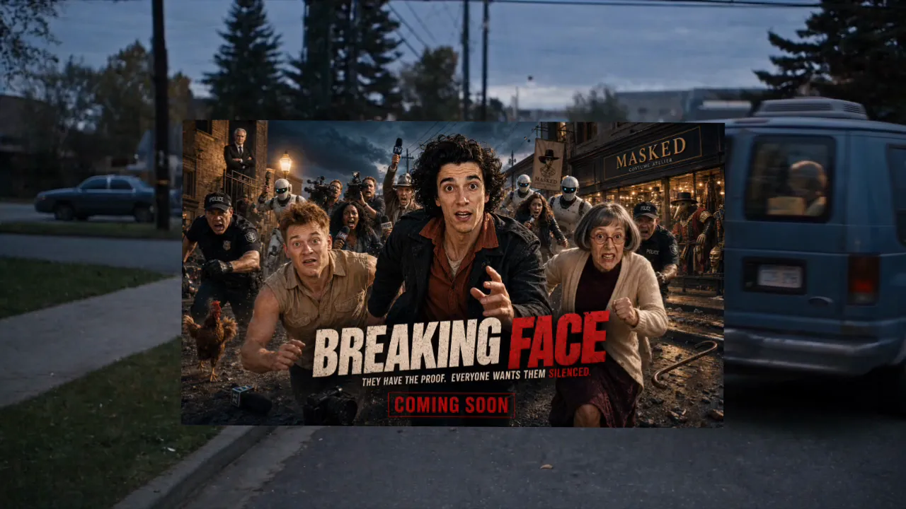

TRAKVoir TRAK
TRAKVoir TRAK
 EntreprendreVoir mon parcours
EntreprendreVoir mon parcours
 CinémaVoir Breaking Face
CinémaVoir Breaking Face
 Apps et SaaSVoir mes apps et SaaS
Apps et SaaSVoir mes apps et SaaS
Entrepreneur · Disponible pour une mission
Je crée des entreprises avec l’IA.
Une start-up à Station F, des jeux, un film, des apps pour mes clients. Et j’aide les entreprises à faire pareil.
Salut, moi c’est MAX. Je te fais visiter ?

Qui je suis
Je m’appelle Tom. J’entreprends avec l’IA.
Trois entreprises cofondées, plus de dix projets livrés pour des clients, deux jeux et un film. J’ai touché à tout : vente, design, produit, code, formation. Aujourd’hui, je construis TRAK.
- Entrepreneur
- Product designer
- Développeur
- Réalisateur IA
- Game designer
- Formateur IA
 12 000 h
12 000 hd’IA depuis 2022
 3
3entreprises cofondées
 10+
10+projets livrés pour des clients


Depuis 2022, je travaille avec l’IA chaque jour. Pas pour lui poser des questions : pour construire. Elle code, dessine et filme avec moi. Ma conviction : l’IA ne remplace pas l’entrepreneur. Elle lui donne une équipe.
Mes réalisations
Chaque projet est un monde.
Une app, deux jeux, un film, des plateformes pour mes clients. Tout construit avec l’IA.

L’app qui transforme chaque séance en progression.
Ma start-up. Je conçois le produit et pilote sa production avec des agents IA.
- Station F · Fighters S26
- ~480 écrans en 3 semaines
- 72 badges · 1 mascotte


Mon jeu vidéo : un salon de thé japonais qui devient un domaine.
Je fixe le gameplay et le style. Des agents IA construisent le jeu.
- Jeu mobile en 3D
- 100+ modèles 3D
- Aucun artiste externe


Film · 2026
Breaking Face
Une bande-annonce entièrement faite avec l’IA, que j’ai écrite et dirigée.
- 52 s · 100 % IA
- Higgsfield Global Film Festival


Booply. Un jeu mobile, de l’idée au prototype en quelques jours.
On glisse un petit monstre, tout explose en cascade. Je l’ai conçu de A à Z.
- Prototype en 4 jours
- iOS et Android à venir


LYNEWED. Une plateforme livrée. Un fondateur formé à l’IA.
App, site et CRM pour le mariage. Puis la formation de son fondateur à développer avec l’IA.
- Mission freelance
- App, site, CRM
- Formation IA


Un studio produit. Cinq produits conçus avec l’IA.
Le laboratoire où j’ai appris à passer d’une idée à une app, vite.
- Cofondateur · 2023–2025
- Apps et assistant IA


Ma première entreprise. 200+ clients, une vraie leçon.
Une marque de compléments pour sportifs. J’y ai appris qu’un bon produit ne suffit pas.
- Cofondateur · 2023
- E-commerce
Mon parcours
Depuis 2022, en accéléré.
- 2022
Je découvre l’IA générative.
Et je ne m’arrête plus : je teste, je construis, j’apprends.
- 2023

BeeFit, ma première entreprise.
Une marque de compléments pour sportifs. Plus de 200 clients.
- 2023 – 2025

Aurizon, un studio produit.
Cinq produits conçus avec l’IA. C’est là que naît ma méthode.
- 2025 – 2026

Freelance.
Seul ou en petite équipe, plus de dix projets livrés : SaaS, apps, sites. Et mes premières formations à l’IA.
- 2026

TRAK, sélectionnée à Station F.
Cofondateur et CEO. La production pilotée avec des agents IA.
- 2026

Un film, deux jeux.
Breaking Face, Booply, Resto Mania : l’IA là où on ne l’attend pas.
- Aujourd’hui
Je construis TRAK. Et j’aide des entreprises à intégrer l’IA.
Ma façon de travailler
L’IA, c’est mon équipe.
Je lui confie des missions, je fixe les règles, je vérifie chaque résultat.

- ~480écrans conçus en 3 semainesTRAK
- 1 000+agents IA lancésTRAK
- 100 %d’un film généré par l’IABreaking Face
- 100+modèles 3D, sans artisteResto Mania
- 4 joursde l’idée au prototypeBooply
- 1fondateur formé à coder avec l’IALYNEWED
 Claude
Claude Claude Code
Claude Code ChatGPTHHiggsfield
ChatGPTHHiggsfield Cursor
Cursor Figma
Figma Framer
Framer Notion
Notion n8n
n8n Supabase
Supabase React
React Expo
Expo Godot
Godot GitHub
GitHub Vercel
Vercel
 Je teste les nouveaux outils chaque jour. Ce qui marche finit dans mes projets.
Je teste les nouveaux outils chaque jour. Ce qui marche finit dans mes projets.
Ma vision
Ce que je crois, en trois idées.
01L’IA est une équipe, pas un outil.
Celui qui sait lui confier du travail avance beaucoup plus vite.
Lire02Les petites équipes ont une carte à jouer.
En France, peu d’entreprises utilisent vraiment l’IA. Le terrain est libre.
Lire03Utiliser ChatGPT n’est pas intégrer l’IA.
Le vrai gain vient des process, pas des questions.
Lire
Intégrer l’IA dans votre entreprise
Travaillons ensemble
Ce que je fais pour mes projets, je peux le faire pour vous.
En mission de 3 à 12 mois, j’intègre l’IA dans vos équipes, service par service.
- Auditer
- Intégrer
- Former
- Mesurer
5,0 sur Malt · Déjà fait chez LYNEWED


Un projet, une idée, une mission ?
Écrivez-moi. Je réponds vite, et toujours moi-même.